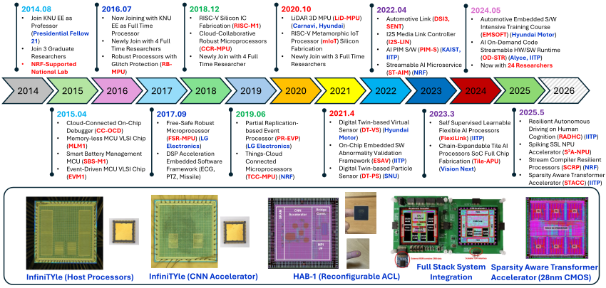

|
Lab History (13h Years Since Lab Foundation)
|  |
{kind=link}
Active Members
 |
Alumni
 |
For Prospective Applicants

우리 연구실은 소프트웨어와 하드웨어를 하나로 엮어 새로운 형태의 인공지능 시스템을 만드는 곳이다. 보통은 소프트웨어는 코드로, 하드웨어는 칩으로 따로 존재한다고 생각하지만, 우리는 그 경계를 허물어 완전히 결합된 단일 시스템을 만드는 곳이다. 연구실에서 설계한 인공지능 모델은 컴퓨터 안에서만 실행되는 것이 아니라, 실제 반도체 칩 위에서 스스로 학습하고 적응할 수 있게 소프트웨어가 완전히 내장된 풀칩 설계를 목표로 한다. 쉽게 말해, ‘뇌’의 역할을 하는 소프트웨어를 ‘몸’인 하드웨어에 직접 심어 주는 일이라고 보면 된다.
대부분의 연구실이 소프트웨어만 구현해서 기존 칩에 올리는 일만 하거나, 프로세서에 탑재할 내장 소프트웨어의 구조적 특성을 고려하지 않고 우선 칩 설계에만 집중하는 연구실이 대부분인 반면 우리 연구실은 칩 설계 단계부터 내가 만든 가속 하드웨어에 탑재될 인공지능 소프트웨어를 최고의 효율로 고성능 집적,적재,실행이 가능한 차세대 인공지능 프로세서의 풀 스택 시스템 전체를 단일 칩으로 구현하는 독보적인 연구실이다.
이 과정을 위해 우리는 두 가지 흐름을 동시에 다루고 있다. 하나는 추상적인 알고리즘을 실제 칩으로 구현하는 일이고, 다른 하나는 원래 고정되어 있던 칩 구조를 상황에 따라 바뀌는 유연한 구조로 바꾸는 일이다. 즉, Hardening Software, Softening Hardware 개념을 향해 매진한다. 예를 들어 Spiking Neural Network(SNN)와 Self-Supervised Learning(SSL) 같은 뇌를 모방한 모델을 설계한 다음, 이를 CMOS 공정 반도체 위에 실시간으로 동작하도록 하드웨어 회로를 직접 제작하고 여기에 커스터마이즈된 인공지능 소프트웨어를 집적시키는 일을 한다. 이때 단순히 회로를 그리는 데서 끝나는 것이 아니라, 모델을 압축해 메모리에 맞추고, 연산을 병렬화해 속도를 높이고, 전력 소모를 줄이는 작업까지 함께 진행해서 효율을 배로 끌어올릴 수 있다.
우리의 연구는 늘 전체 소프트웨어-하드웨어가 상호작용하는 과정에서 동적인 실행 특성을 최적화하는 것을 목표로 진행되고 있다. 새로운 아이디어가 생기면 먼저 모델을 설계하고 학습시킨 뒤, 가볍게 만들기 위해 불필요한 계산을 줄이고 그 다음에는 모델을 회로 언어로 바꾸고, RTL 시뮬레이션을 통해 타이밍과 전력을 검증한 후, FPGA나 직접 만든 칩에 올려 실제로 실행을 해보면서 런타임 특성을 최적화한다. 마지막에는 자율주행 시뮬레이터와 같은 시뮬레이터와 연결해 실시간 환경에서 실증하면서 실제 시스템에 적용했을때의 성능을 최대로 끌어올리기 위한 작업을 한다. 이렇게 한 줄의 파이썬 코드가 회로가 되고, 회로가 학습하는 존재로 바뀌는 과정을 반복하며 시스템을 완성해 간다.
연구실에는 하드웨어 전공자, 소프트웨어 전공자, 로보틱스 전공자까지 다양한 사람들이 모여 있다. 각자 맡은 영역은 다르지만, 함께 실험을 설계하고 결과를 분석하면서 서로의 지식을 공유하면서 수평적, 수직적인 깊고 넓은 지식과 관점의 스펙트럼을 가진 전문가로 성장한다. 실패하면 배운 점을 공유하고, 성공하면 곧바로 다음 실험을 시작하면서 이론보다 실험이 먼저고, 정답을 찾기보다 가능성을 열어 보면서 자신을 발전시키는 곳이다.
우리가 만드는 것은 단순히 소프트웨어로만 동작하는 인공지능이 아니다. 상황이 바뀌면 하드웨어-소프트웨어가 상호 연동하는 과정에서 스스로 적응하고, 새로운 환경에 들어가면 스스로 배우는 지능을 칩레벨 내장형 소프트웨어와 연계된 모든 시스템을 풀커스텀으로 설계한다. 이 모든 개념을 담는 연구실의 모토가 Hardening Software, Softening Hardware이다. 언젠가 이곳에서 태어난 시스템들이 자동차, 드론, 소형 기기 등 세상 곳곳에 들어가서 작지만 똑똑한 두뇌로 활약하게 될 거고, 지금 우리가 그 미래를 만들고 있다.
(2025.09.01, Written by H. J. Youn, Ph.D Student)
Support and Benefit for Active Members
Top Class Financial Support in Korea (including Research Activities, 4 Times International Conference Participation)
Fully Free Research Activity with No Tax, No Duty-Labor, Only Requiring for Becoming Best Expert in SoC Field
Internship Program with collaboration with Researchers in ETRI, ADD, KETI, Samsung, LG Electronics, Hanhwa, LIGNex1, Hyundai Motor
Visiting Scholar co-working with international researchers in USA
Fellowship Program fully supported by LG Electronics Target Lab
Recent Presentation Video (Lab Memory in 2024)
SW-Embedded S2oftware-on-Chip Expert Training Center
Our lab focuses on training highly in-depth expert AI-Software-Embedded VLSI S2oftware-on-Chip Designers, teaching the following all stages to realize the AI-stacked System-Software-on-chip for various mission-critical embedded system design, especially capable of
Optimizing On-chip Embedded AI Software Stack.
Designing Tightly-coupled On-chip AI Hardware Accelerator.
Implementing full stack AI-Embedded system-software-on-chip integrated on CMOS silicon die.
 |
News

2026-02. Congratulation !! Mr. Y. H. Lee (Ph.D 2nd year)'s paper is selected as Best/Excellent Paper in IEEE ICAIIC 2026.
2026-01. Congratulation !! Mr. M. J. Kang (Ph.D 4rd year) is now with Agency for Defense Development (ADD) 국방과학연구소 as Ph.D Senior Researcher
2025-12. Congratulation !! Mr. M. J. Kang and S. H. Cho successfully passed their Ph.D Dissertation Defense
2025-12. Congratulation !! Mr. J. K. Pee and B. I. Jung and J. Y. Byeon successfully passed their Master Dissertation Defense
2025-11. Congratulation !! Mr. S. H. Park (Ph.D 1st year)'s research will be registered to U.S. International Patent Pending
2025-10. Congratulation !! Mr. G. H. Jeon (M.S. 2nd year)'s paper was accepted to Embedded Software Top Conference ESWEEKS 2025 TCRS Workshop and recommended to Journal Publication of IEEE Embedded Systems Letters (SCI).
2025-09. Congratulation !! Mr. S. H. Park (Ph.D 1st year)'s paper (Exploiting Output Activation Sparsity in Bit-Separable Multiplier-based CNN Accelerator) was accepted to IEEE Micro (SCI), one of VLSI Top Flagship Journal.
2025-09. Congratulation !! Ph.D Students H. J. Youn, S. H. Park and G. H. Jeon received their research grants Excellent Ph.D Student Research Scholarship total (75,000,000 Won)
2025-09. Congratulation !! Our Lab received excellent Advanced Basic NRF Research Fund (Stream-Aware Compiler-based Resilient AI Processor Architecture) from Korea Government (NRF, MSICT)
2025-08. Congratulation !! Dr. S. M. Lee is now with Daegu Catholic University as Assistant Professor.
2025-08. Congratulation !! Ph.D Student Mr. M. J. Kim's Journal Paper (Ultra lightweighted Hypervisor for Embedded Automotive Systems) was accepted to IEEE Access (SCI Journal).
2025-07. Congratulation !! Ph.D Student Mr. M. J. Kang's Journal Paper (Flexible Edge-AI Software Execution Architecture) was accepted to IEEE Access (SCI Journal).
2025-06. Congratulation !! Dr. Oh's collaborative paper was accepted to IET Electronics Letters (SCI) (topic with Collaborative Beamforming).
2025-06. Congratulation !! Ph.D Student Mr. S. H. Hong's Journal Paper (Embedded AI-Edge Systems for Autonomous Vehicles) was accepted to IEEE Transactions on Intelligent Transportation Systems (TITS, JCR 2% Top SCI Journal).
2025-05. Congratulation !! Mr. J. S. Kwon (Ph.D) depended the final test for his dissertation thesis. (ready to be Dr.)
2025-05. Congratulation !! Mr. S. H. Park (Ph.D 1 Year)'s paper (AI Transformer Accelerator Chip) was accepted to IEEE Hot Chips (Top Tier Conf. HotChips 2025), one of VLSI Top Flagship Conference.
2025-04. Congratulation !! Ms. H. J. Youn (Ph.D 2 year)'s paper (Spiking Neural Network Chip) was accepted to IEEE Transactions on VLSI Systems (TVLSI), one of VLSI Top Flagship Journal.
2025-04. Congratulation !! Our lab received excellent Fundamental R&D grant (Human Perception-based AI SoC, 2025-2032 8 years) from Korea Government (IITP, MSICT).
2025-04. Congratulation !! Ms. H. J. Youn's paper was accepted to IEEE COOLChips 2025 as Regular Oral Presentation Paper with Low-Power CNN-SNN Hybrid Accelerator for High Performance AI Applications.
2025-04. Congratulation !! Our research was funded for Silicon fabrication to design our Transformer Acceleration AI-Chips using CMOS Samsung LPP 28nm process.
2025-03. Mr. S. Cho, S. Hong, J. Ahn, M. Kang, and S. H. Lee successfully passed their qualification test (Ph.D 1st test) IT
2025-02. Our Lab successfully presented our research results in PIM Research Center Annual Collaboration Meeting 2025.
2025-02. Our Lab successfully presented our research results in SSL-Processor Research Group Annual Collaboration Meeting 2025.
2025-01. Mr. J. S. Kwon's paper was accepted to IEEE VLSI-TSA 2025 with AI-based ADC Resolution Management Framework.
2025-01. Mr. J. S. Kwon's journal paper was accepted to Applied Sciences (Q1 Grade) with Micro-Accelerator-in-the-Loop Framework for MCU-Embedded AI Accelerators.
Sponsored Active Research Grants
Our research group has been sponsored from the national research fund (NRF), research institutes and various industrial companies. Welcome to contact us about the technology transfer, technical consulting, and discussion for future collaboration.
Stream-Aware Adaptive Compiler and Resilient AI Processor for Reliable Multi-modal AI Execution, 2025-2028, NRF, MSICT.
AI Model Compression Framework for Embedded Systems, 2025-2026, HDMT.
Resilient Autonomous Driving on Human Cognition using Radar Feedback, 2025-2032, IITP, MSICT.
Future Automotive Convergence Software Engineer Training Center, 2024-2028, MOTIE.
Self Supervised Learnable Flexible AI-Edge Processors, 2023-2027, IITP, MSICT.
AI Grand ICT Research Center, 2022-2029, IITP, MSICT.
Intensive School on Embedded System Software for Hyundai Motor Group, 2022-2026, HNGV.
Self-Organized Community Computing Platform for Resilient Environment, 2018-2027, NRF, ME.
BK21 Four Project in School of Electronic and Electrical Engineering, KNU, 2020-2028, NRF, ME.
IC Design Education Center (IDEC) EDA Software Tool License Support, 2016-2026, IDEC.
Supported By
 |
Contact
| 80 Daehak-ro, Buk-gu,
School of Electronics Engineering, Kyungpook National University (KNU) IT-1 Building, no.719, Tel. 053-950-5548 Daegu, South Korea, 41566 Email: boltanut at knu.ac.kr Office Hours: pre contact |